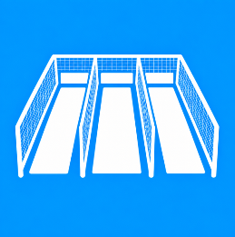
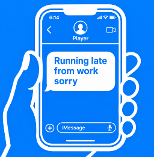
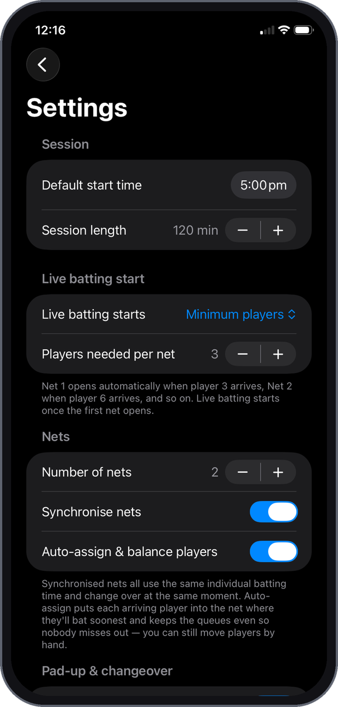

Real-time net session management
Every player gets a fair hit in the nets.
Cricket Training Timer makes it easier for teams to share limited training time and net space fairly among all players.
- Set up in 30 seconds
- No account needed


The importance of fairness
Stronger clubs start with better player experiences.
Sustainable cricket clubs attract, retain and engage players. Players who feel valued, included and fairly treated are more likely to return, participate and contribute financially.
The challenge for cricket teams
Net sessions are hard to run fairly.


Limited time, limited nets, large squads and unpredictable arrival times make training difficult to manage fairly. Coaches must continually allocate limited resources while ensuring every player receives a fair opportunity to practise.
The solution
Cricket Training Timer solves this problem.
The app automates batting rotations, balances net queues and allocates batting time in real time. As players arrive, the app adjusts the schedule to accommodate them.
How it works
Making fairer training easier.
Create your club
Enter your club name and add players. Add more at any time.
Set up the session
Choose your times, nets and changeover, then add who's arrived.

Hit start
Batting time counts down in each net. Add late arrivals as they turn up.
User guide: step-by-step instructions
1Getting started
The first time you open Cricket Training Timer, three short screens set up your club: create your club, add players, and save your session defaults.
Create New Club
Welcome to Cricket Training Timer
Enter Club Name
Enter Name (Optional)
No account needed. Your club name and your name are only used to personalise the app on your phone. They aren’t used to create an account, and they’re never sent anywhere. There’s no sign-up, no password and no email.
Add Players
Add me (Name) as a player (toggle): turn this on if you’re having a hit too. Leave it off if you’re just running the session.
Enter Player Name, then tap Add Player.
Add as many players as you like to your club list. The free version allows up to 6 players per session, and Pro unlocks unlimited players.
Add players at any time. You don’t need everyone added upfront. You can also add players when setting up a session, or during the session as they arrive.
Skip for now: tap this if you want to add players later.
Save Defaults
These are your usual training settings. Every new session starts with them, and you can change them for any single session.
Session
Default Start Time: select your usual training session start time.
Session Length: select your usual training session length (minutes).
Live Batting Starts: choose when live batting time begins.
At session start: batting begins as soon as the session starts.
After session start: batting begins a set number of minutes after the session starts, leaving time for warm-ups or drills first.
Minimum players: each net opens automatically once enough players have arrived, and batting starts when the first net opens.
Nets
Number of Nets: the total number of nets available to use at training.
Open at Start: how many of those nets are in use when batting begins. You can open or close nets during the session, and batting times update automatically.
Sync Nets (toggle): when this is on, changeovers happen at the same time in every net. You can turn it on or off during the session from the live screen. For example, if you start training with one net and open a second as more players arrive, you can turn it on so both nets change over together.
Auto-assign & balance players (toggle): when this is on, each player who arrives is automatically assigned to the net where they’ll bat soonest, and the queues are kept even across nets. When it’s off, you assign each player to a net yourself. Either way, you can move players between nets at any time.
Pad-Up & Changeover
Changeover Time (toggle): adds a short break between batters, for example 30 seconds. It lets the finishing batter leave the net safely while the next batter walks in and takes guard.
Pad-Up Time: how many minutes’ warning the next batter gets before their turn. The app alerts you so the next batter has time to pad up and be ready at the net, with no waiting between batters. At the start of a session, the first batters get this time to pad up before batting begins.
Individual Batting Time Limits
- Limit Individual Batting Time (toggle), Minimum and Maximum: set the shortest and longest time each player should bat, for example 8 to 12 minutes. The app keeps each turn within these limits. If there isn’t enough time for everyone to reach the minimum, everyone still gets a turn, with the time shared as evenly as possible.
Batting Time Calculation
Recalculate every: how often the app updates batting times during the session, for example every 5 minutes, so they stay accurate as time passes.
Also recalculate when players or nets change (toggle): when this is on, batting times also update straight away whenever a player arrives or leaves, or a net opens or closes. Leave it on for the most up-to-date times. Updates apply to the next batter in. Anyone already batting keeps the time they started with.
Tap Save Defaults to finish. You’ll land on your club home screen.
2Club home
The club home screen shows your club name and a welcome with your name. Everything in the app starts from here.
Resume Session: only shows when a session is running. It shows the date, start and finish times, and how many players are at training. Tap it to go back to the live screen.
Start New Training Session: set up a new session (date, times, nets and players).
Manage Players: add, rename or remove players in your club list. It shows how many club players you have.
View Reports: see past sessions and attendance. It shows how many sessions have been recorded.
Settings: your session defaults, club details, Pro and privacy.
Starting a new session while one is running. You’ll be asked what to do with the current session:
Resume Current Session: go back to the live screen.
End It & Start New: ends the current session, saves it to your reports, and opens a new session setup.
Cancel: stay on the home screen.
3Starting a training session
Tap Start New Training Session. The New Session screen is filled in from your saved defaults, so most nights you only need to add who’s there and tap Start Session.
Session
Date: the day of training. Today is selected.
Start: when the session starts.
Finish: when the session ends. The session length is shown underneath, for example “2 h session”.
Players here now
Tap Add Players to open your club list.
Tick each player who is at training. The number next to each name (#1, #2 and so on) shows the order you ticked them, which is the order they’ll bat.
Use the search bar to find a player quickly.
New to the club? Type their name under New player and tap Add. They’re added to your club list and ticked for this session.
Tap Done to return. The count shows how many players you’ve picked.
On the New Session screen, tap Edit to drag players into a different order or remove them. You don’t need everyone here yet. Add others as they arrive.
Session settings
This row shows a one-line summary of the settings this session will use, for example “Batting at start · 2 of 2 nets open · 30 sec changeover”. Tap it to change anything for this session only.
Batting starts: At start, Set time (choose the time batting begins), or By players (choose how many players are needed to open each net).
Nets available and Open at start
Changeover between batters and the changeover length (seconds)
Synchronise nets
Make these my usual settings: turn this on to save these changes as your defaults for future sessions.
Start the session
Before you start, the app shows roughly how long each player will bat, for example “Batting time each: about 12:30”.
Tap Start Session to go to the live screen.
If the button can’t be tapped, a short message above it tells you why:
No players have been added yet.
The finish time is before the start time, or has already passed.
A set batting start time is outside the session times.
If the session uses more than 1 net or more than 6 players on the free version, the button reads Unlock Pro to Start. See section 7.
4Live session
The live screen runs the whole session: the session clock at the top, a card for each open net, then the full player list. The top-right buttons are Add Players and Adjust Session.
Session clock
The large timer shows Session time remaining, with a bar that fills as the session goes. Once the finish time passes it reads Past finish time.
If you’ve set a minimum batting time and there isn’t enough time left for everyone to reach it, an orange note appears: everyone gets an equal turn below the minimum so nobody misses out.
Before batting begins
Until live batting starts, a card shows when it will begin:
Batting starts (time): the first batters pad up, then enter the net.
Waiting for players (3 of 4): shown when batting starts by players. Net 1 opens when the set number of players have arrived.
Tap Start Now to begin batting straight away.
Synchronise nets
Turn this on so every open net uses the same batting time and changes over together. If you turn it on mid-session, the nets line up within one batter’s turn, and the card shows the time they’ll all change over.
Net cards
Each open net has its own card. Swipe sideways if you have more nets than fit on the screen.
Time remaining: the countdown for the current batter.
Batting, Next, Then: who’s in now and who’s coming up. Tap + more to see the full batting order for that net.
Status button (Open, Closing, Closed): tap it to close or reopen the net.
Pad up / Changeover: shown between turns, with a countdown to the next batter.
The ••• menu on each net has:
Next Batsman: ends the current turn and sends in the next batter.
Show full batting order
Add another net
How batting time is worked out: shows the batting time locked in for the next batter in any net.
Changing the order in a net. Tap a player in the net card for these options:
Move up, Move down, Make next in: reorder players who are waiting.
Bat now: sends a waiting player in straight away. The current batter’s turn ends and they become next in.
End turn — Next Batsman: for the player batting now.
Bat again: gives a finished player another turn.
Remove from net or Check out (left training)
If a change would cut short someone’s turn, the app asks you to confirm first. Only do this if needed, for example an injury or a player who has to leave.
Opening and closing nets
Add Net / Open Another Net: opens a closed net, or adds a new one if all nets are open.
Close a net: tap its status button, then choose Close after current batter (the net shows Closing until their time ends) or Close now (their turn ends straight away). Waiting players move to the other open nets.
Batting times update automatically whenever a net opens or closes.
Players list
The list below the nets shows every player at training, with their status and net.
| Status | Meaning |
|---|---|
| Batting now | In a net now |
| Next in ~6:42 | Next to bat in their net, with an estimated start time |
| In queue ~6:55 | Waiting, with an estimated start time |
| No net yet | At training but not assigned to a net |
| Net closed | Assigned to a net that has closed |
| Finished · 12:30 | Has batted, with their total batting time |
| Left | Checked out of training |
Add Player: tick players as they arrive. They’re added to the end of the queue and batting times update.
Net drop-down: choose which net a player bats in, or Remove from net.
Put 2 waiting players into nets: appears when players have no net. Tap it to assign them all at once.
••• menu: Check out (left training) when someone leaves, Back at training if they return, or Bat again for a finished player.
Alerts
The app alerts you when:
The next batter needs to pad up, with their net and an approximate start time.
A batter’s time is up, followed by the changeover countdown.
The session end time is reached.
Allow notifications when the app asks, so alerts still reach you when your phone is locked.
Adjust Session
Tap Adjust Session (top right) to change this session while it’s running: the session end time, the live batting start time, pad-up and changeover times, Synchronise nets, Auto-assign & balance players, individual batting time limits, and how often batting times are recalculated. Tap Apply to save.
Changing the end time updates the batting time for the next batters. Anyone already batting keeps the time they started with.
When everyone has batted
When every player in the open nets has finished, the app asks what to do next:
Another Round: everyone bats again in the open nets.
Add Players: add more players.
Close Session: end the session.
Not Now: keep the session open.
When the end time is reached
Choose Extend 15 min, Extend 30 min, End Session or Continue.
Ending the session
Tap End Session at the bottom of the screen and confirm. Batting times are saved to Reports.
5Manage players
Player Management holds your full club list. Players you add here are ready to tick at any session.
Add New Player (+): enter a Name, an optional Email, and a Role (Player, Coach or Session Manager). Tap Save.
Edit: swipe left on a player and tap Edit, or press and hold their name.
Delete: swipe left on a player and tap Delete.
Search: pull down to show the search bar, then search by name or email.
A cricket icon next to a name means that player is at the current training session.
Adding players to a session from here. While a session is running, tap Edit, select players, then tap Add (number) to current session at the bottom of the screen.
6Reports
Every session you end is saved to Statistics and Reports. Tap View Reports on the club home screen to open it.
Season: show one season, or All seasons.
Summary: training sessions, total attendance, total live batting time, and average players per session.
Training sessions: each session with its date, times, players and nets used. Tap one for the full session report: scheduled and actual end times, attendance, total and average batting time, and each player’s arrival time, departure time and batting time. Swipe left on a session to delete it.
Players: each player’s sessions attended, total batting time and average per session.
Export to CSV (Pro)
Tap Export to CSV to share a spreadsheet file of your reports, for example by email, AirDrop or to the Files app. You can export the whole season from the reports screen, or one session from its session report. The file opens in Excel, Numbers or Google Sheets.
7Settings and Pro
Settings
Tap Settings on the club home screen.
Session defaults: the same settings you chose in Save Defaults (section 1). New training sessions use these.
Club: change your club name or your name.
Save Settings: tap this after making changes.
Privacy: what the app stores and what it doesn’t.
About: the app version.
Delete All Data: permanently deletes your club, players, settings, any session in progress and all reports from this phone. It can’t be undone, so export any reports you want to keep first.
Free and Pro
| Free | Pro | |
|---|---|---|
| Nets per session | 1 | Unlimited |
| Players per session | Up to 6 | Unlimited |
| Live countdowns and next batsman alerts | Yes | Yes |
| Session reports | Yes | Yes |
| Export reports to CSV | No | Yes |
Pro is a one-off purchase through the App Store, with no subscription.
Unlock Pro: in Settings, or whenever you go past a free limit (for example opening a second net or adding a seventh player).
Restore Purchases: on a new phone, or after reinstalling the app, tap this in Settings to unlock Pro again at no charge. Use the same Apple ID you bought it with.
8Tips and troubleshooting
Do players need the app? No. One phone runs the whole session.
Does it need internet? No. Sessions run entirely on your phone, so poor reception at the ground isn’t a problem.
I’m not getting alerts. Check that notifications are on for Cricket Training Timer in your iPhone’s Settings app, and that Focus or Do Not Disturb isn’t silencing them.
I closed the app by mistake. Your session keeps running. Open the app and tap Resume Session on the club home screen.
A player arrived late. Tap Add Player on the live screen. They join the queue and batting times update.
A player has to leave early. Use Check out (left training) from the player’s ••• menu. If they come back, choose Back at training.
We’re running out of time. Use Adjust Session to change the end time, or choose Extend 15 min or Extend 30 min when the end time is reached.
I can’t start the session. Read the message above the Start button. It tells you what needs fixing, such as adding at least one player or choosing a finish time that hasn’t passed.
Where is my data stored? Only on your phone. There’s no account, no tracking and no ads. Your data may be included in your own iCloud or computer backup.
Need more help? Email jace_kayne@hotmail.com.
Pricing
Free and Pro
Free
- 1 net per session
- Up to 6 players per session
- Live countdowns and next batsman alerts
- Session reports
Pro
- Unlimited nets
- Unlimited players
- Export reports to CSV
- Everything in Free
Pro is a one-off purchase through the App Store, with no subscription. Local prices may differ outside Australia.
Privacy
Your data stays on your phone.
No account needed
No sign-up, no password and no email.
Never sent anywhere
Stored only on your phone. No tracking and no ads.
Delete all data
Remove your club, players and reports at any time from Settings.
Read the full privacy policy.
Tips and questions +
Do players need the app?
No. One phone runs the whole session.
Does it need internet?
No. Sessions run entirely on your phone, so poor reception at the ground isn't a problem.
A player arrived late.
Tap Add Player on the live screen. They join the queue and batting times update.
A player has to leave early.
Check them out of training. If they come back, choose Back at training.
Can I set limits on batting time?
Yes. Set the shortest and longest time each player should bat. If there isn't enough time for everyone to reach the minimum, everyone still gets a turn, with the time shared as evenly as possible.
Is it a subscription?
No. Pro is a one-off purchase through the App Store.
The story behind the app
Cricket Training Timer was first developed in 2022 by Jack Payne, a club cricketer in Perth, Western Australia.
At evening training, players arrive at different times, the number of nets varies, and the session is often run by players who are trying to train at the same time. Keeping track of who has batted and for how long is hard, and some players end up batting more or less than others.
The aim was to remove the manual management of training sessions and automate batting time, so every player gets an equal chance to bat.